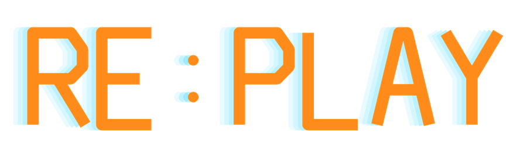

RE:PLAY
RE:PLAY1
Agis
Tu as quelques secondes. Déplace-toi, actionne un levier, tiens une plaque, attire une tourelle.

Ton passé est ton meilleur allié.
Chaque boucle de temps crée un double de toi qui rejoue exactement tes gestes. Tiens une plaque, recommence, et c'est ton double qui la tiendra pendant que tu passes la porte.
Le principe
Dans les laboratoires abandonnés d'ÉCHO, le temps tourne en boucle. Chaque salle se résout en coopérant avec tes propres tentatives.
Tu as quelques secondes. Déplace-toi, actionne un levier, tiens une plaque, attire une tourelle.
Le temps repart à zéro. Ton enregistrement devient un double qui refait tout, à l'identique.
Pendant que tes doubles ouvrent la voie, tu atteins la sortie. Avec le moins de boucles possible.
Captures
Tes doubles ne s'adaptent jamais. Si une porte se ferme devant eux ou qu'un rayon leur barre la route, ils disparaissent : le passé doit toujours rester possible.
48 salles, 4 secteurs
Chaque secteur apporte ses propres mécaniques, et un journal de bord raconte ce qui est arrivé à ÉCHO.
Plaques, leviers, minuteries, lasers, caisses et tourelles : les bases du voyage dans ses propres pas.
Des plaques que seuls tes doubles peuvent activer, des relais chronométrés et des leurres.
Téléporteurs, zones de silence et tourelles qui se fixent sur le premier double qu'elles voient.
Rayons d'énergie, miroirs, capteurs et ancres temporelles qui gardent leur place d'une boucle à l'autre.
Points forts
Efface ton dernier double et réessaie, sans recommencer toute la salle.
Termine avec le moins de boucles possible pour décrocher les trois étoiles.
Joystick et deux boutons, en mode paysage, faits pour jouer d'une main ou deux.
Un journal de bord s'écrit salle après salle. Que s'est-il passé à ÉCHO ?
Essais, temps, morts, paradoxes et étoiles : suis ta progression.
Aucune donnée collectée. Ta progression reste sur ton téléphone.
Accès anticipé
RE:PLAY est en phase de test avant sa sortie sur Google Play. Tu as un téléphone Android et envie de jouer avant tout le monde ? Écris-nous : tes retours nous aident à régler chaque salle.
Je veux tester le jeu